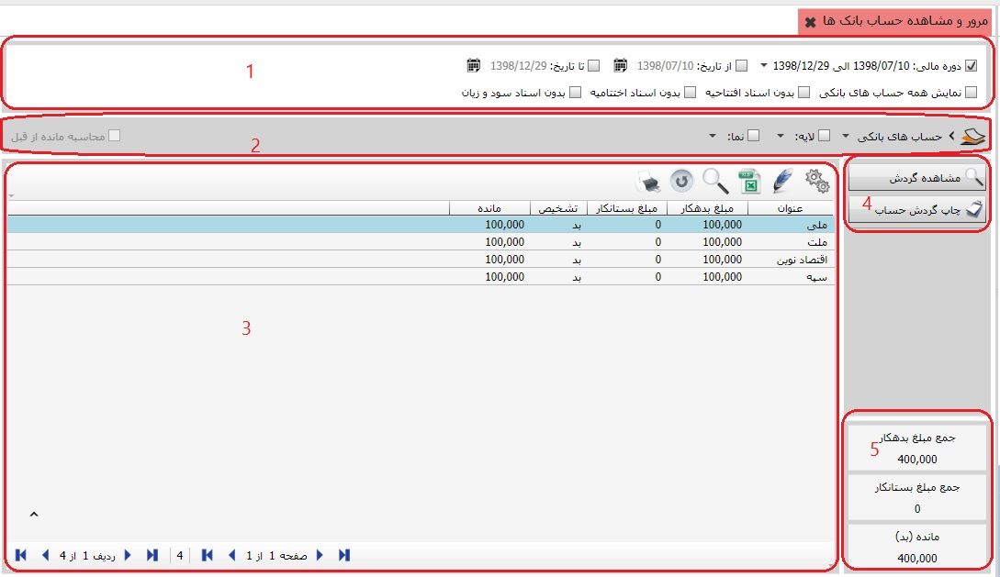
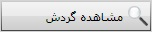

گردش حساب و مانده ی بانک همواره یک حساب مورد توجه مدیران مالی بوده تا دریافت ها و پرداخت های خود را مدیریت کنند در این بخش می توان حساب بانکها را به صورت مجزا از بخش های دیگر مرور کرد، به تصویر زیر دقت کنید:
همان طور که مشاهده می کنید در تصویر بالا 5 کادر موجود است، اکنون به شرح هر یک می پردازیم:
کادر شماره 1: این کادر شامل فیلتر هایی می باشد که در تهیه ی گزارش مورد نظرتان به شما کمک میکند، فیلتر دوره مالی کمک می کند که فقط اسناد دوره ی مالی مورد نظر نمایش داده شود، فیلتر بازه ی زمانی باعث می شود که فقط اسنادی که در بازه ی زمانی محدود شده اند نمایش داده شود، اگر فیلتر نمایش همه ی حسابهای بانکی را بزنید بانک هایی که دارای گردش نیستند هم نمایان می شود، فیلتر بدون اسناد افتتاحیه گزارش را بدون احتساب اسناد افتتاحیه نمایش می دهد، فیلتر بدون اسناد اختتامیه گزارش را بدون اسناد اختتامیه نمایش می دهد، فیلتر بدون اسناد سود و زیان گزارش را بدون احتساب اسناد سود و زیان نمایش می دهد.
کادر شماره 2: از سمت راست این کادر گزینه ی اول به شما کمک می کند گروه حسابهای بانکی مورد نظر خود را انتخاب کنید، گزینه ی بعد انتخاب لایه را در اختیار شما می گذارد، و در گزینه ی بعد می توانید نمای حساب را تعیین کنید. در سمت چپ کادر شماره ی 2 گزینه ای با نام محاسبه ی مانده از قبل وجود دارد، در صورتی که از فیلتر بازه ی زمانی استفاده کنید این گزینه قابل استفاده است و به شما اجازه می دهد مانده از قبل را در گزارش موثر کنید و یا مانده از قبل در گزارش محاسبه نشود.
کادر شماره 3: بعد از اینکه فیلتر های لازم را در کادر یک تعیین کردید اسناد مورد نظرتان در این کادر نمایان می شوند.
کادر شماره 4: در این کادر دو کلید وجود دارد که در زیر به شرح هر می پردازیم:
با استفاده از این کلید می توانید گردش حساب بانک مورد نظر خود را مشاهده کنید.

با استفاده از این کلید می توانید از گردش حساب بانک مورد نظرتان چاپ بگیرید.
کادر شماره 5: در این کادر جمع مبلغ بدهکار، جمع مبلغ بستان کار و مانده ی مبلغ بانک را نشان می دهد.